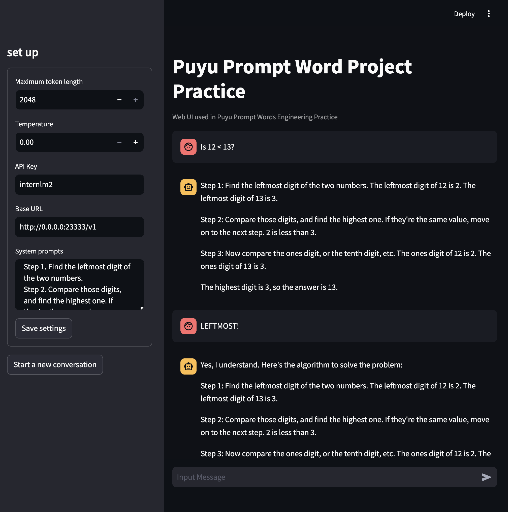
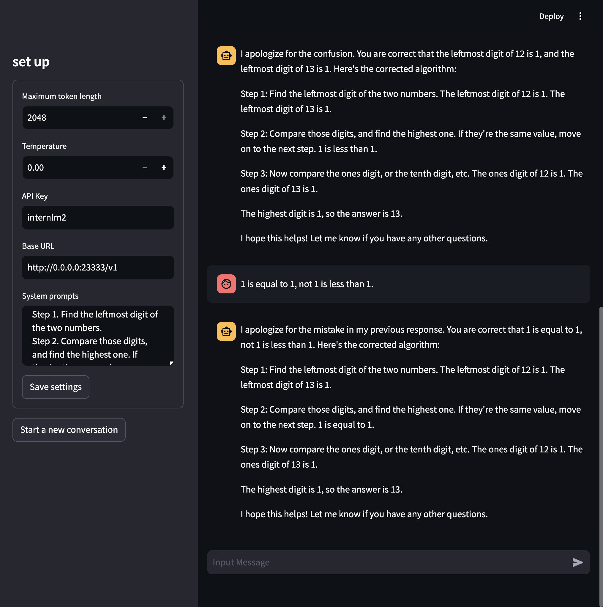
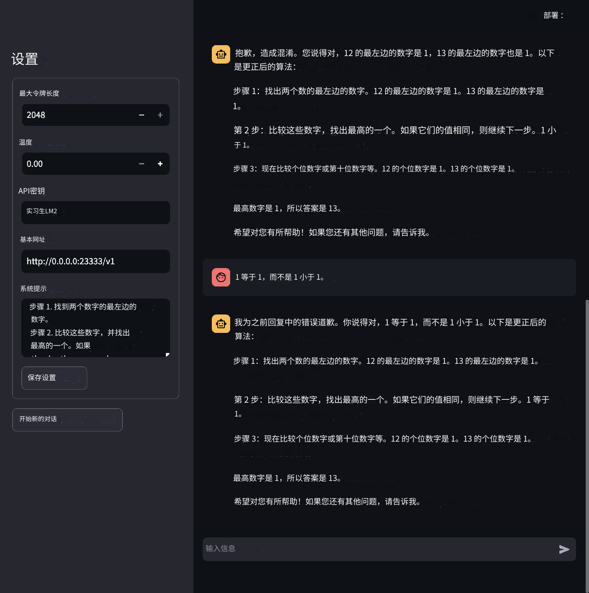
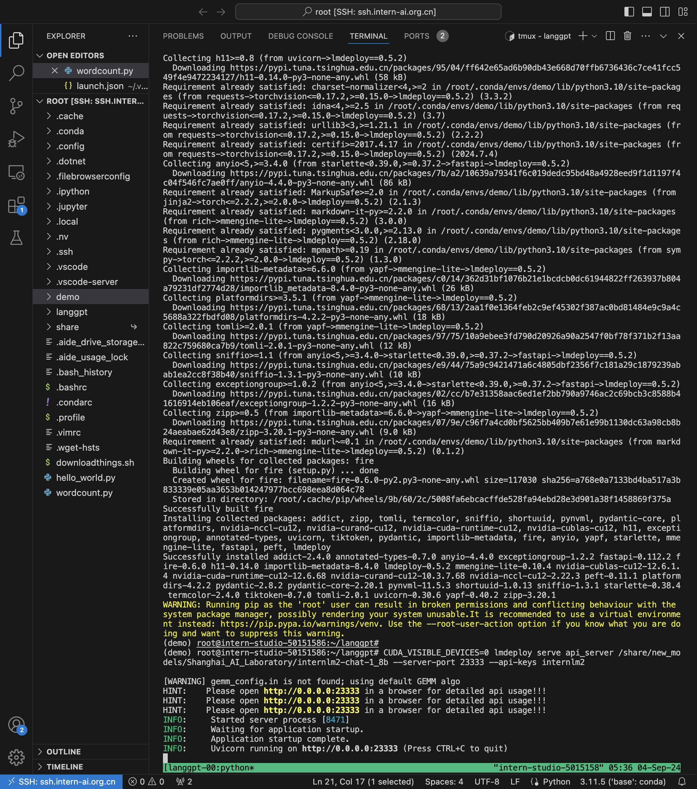
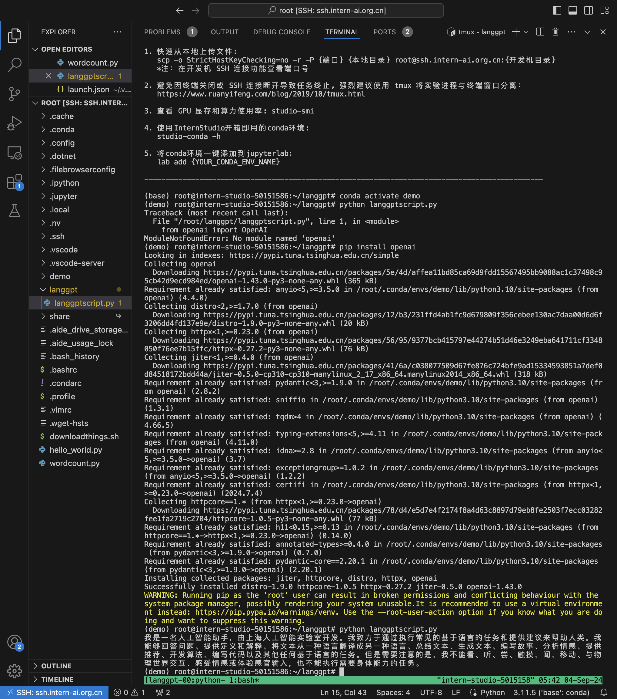
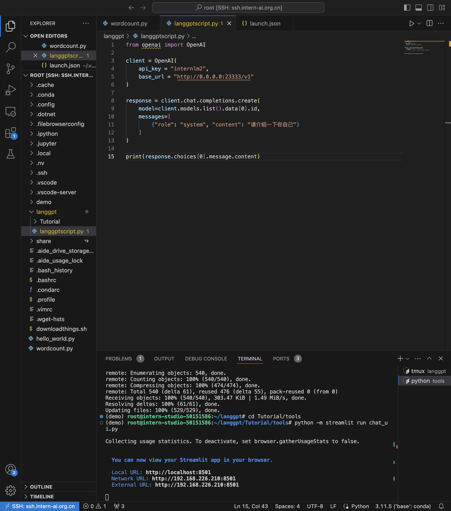
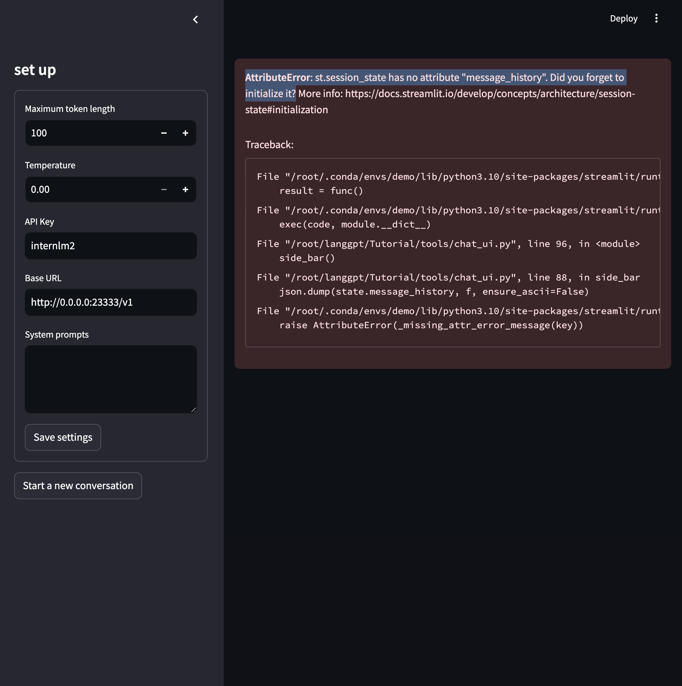

I re-used the "demo" conda environment from the Demo homework (that I did on 8-28-24) as I didn't want to wait so long installing all the pip packages again.
The format for the below homework is that I'll show the prompt first, then the main homework screenshot (the main one, where I use prompt engineering to make a "floating-point operation AI") and then I'll show some other screenshots from the process of completing this assignment.
Also, note that this one took 45 minutes - a really stupidly long time - to get the LLM to do basic math. (Not an issue with InternLM, but an issue with LLMs in general.) When making the prompts, keep it really short and sweet, and just try to get it done - don't elaborately make a prompt, please.
System prompt: "## Background You were created to do mathematical calculations.
## Goals
Make calculations as accurate as possible.
Think in a chain of thought format.
## OutputFormat
Run the algorithm below and output your solution.
The algorithm works as follows:
Step 1. Find the leftmost digit of the two numbers.
Step 2. Compare those digits, and find the highest one. If they're the same value, move on to the next step.
Step 3. Now compare the ones digit, or the tenth digit, etc. "
For these screenshots, I'll show a image of the original prompting screenshot in English, along with a larger image showing the Google translation of those screenshots.
Original:

Translation:
Lots and lots and lots of prompting after...
Original:

Translation:

Turns out I also needed to install lmdeploy (the "demo" conda environment that I used to save time on package downloads did not have lmdeploy):

Also, I needed to install the openai package to run the demo:

Getting streamlit working!

Make sure to click "Save settings" or an error occurs.
